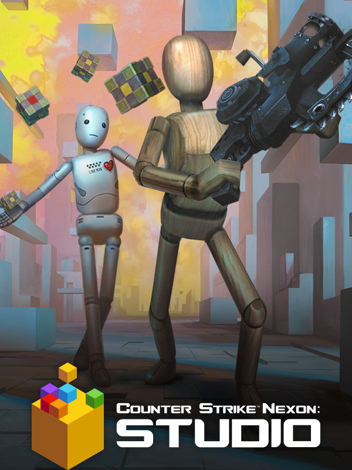

Counter-Strike Nexon: Studio
Counter-Strike Nexon: Studio
Details
|  | |
| Playtime | 24m 0s |
| Last Activity | 13/05/2019 5:21:47 |
| Added | 21/10/2014 |
| Modified | Never |
| Completion Status | Played |
| Source | Steam |
| Platform | PC |
| Release Date | 07/10/2014 |
| Community Score | 65 |
| Critic Score | |
| User Score | |
| Genre | Action Casual Free to Play Massively Multiplayer |
| Developer | Valve Corporation, Nexon Korea Corporation |
| Publisher | Nexon Korea Corporation |
| Feature | Achievements Captions Available Co-op In-App Purchases MMO Multiplayer Single Player Trading Cards |
| Links | PCGamingWiki Community Hub Discussions Guides Achievements Store Page News |
Description
About Counter-Strike
One of the most influential FPS franchises, Counter-Strike is one of the most popular online games to date. Pitting Terrorists VS Counter-Terrorists, players face off to complete their objective in round-based combat. Fast paced action blends with precise, tactical strategy to make for a warzone that anyone can pick up and lets the pros rise to the top.
About Counter-Strike Nexon: Studio
For the first time on Steam, Nexon is making a slice of Counter-Strike history available to everyone! Classic Counter-Strike action, new modes, new guns, new characters, Free to Play—what else are we missing? That’s right, ZOMBIES! We welcome you to do your part in cutting down the undead masses. You’ll find plenty of Zombies there in both PvP and PvE flavors.
About Counter-Strike
One of the most influential FPS franchises, Counter-Strike is one of the most popular online games to date. Pitting Terrorists VS Counter-Terrorists, players face off to complete their objective in round-based combat. Fast paced action blends with precise, tactical strategy to make for a warzone that anyone can pick up and lets the pros rise to the top.
About Counter-Strike Nexon: Studio
For the first time on Steam, Nexon is making a slice of Counter-Strike history available to everyone! Classic Counter-Strike action, new modes, new guns, new characters, Free to Play—what else are we missing? That’s right, ZOMBIES! We welcome you to do your part in cutting down the undead masses. You’ll find plenty of Zombies there in both PvP and PvE flavors.
▪ Free to Play: Counter-Strike Nexon: Studio has no cost to purchase or any subscription fees, just download and load up to get started.
▪ Unrestricted Map Creation: Studio Mode provides tons of features that allow you to customize the maps as much as you want. Create a map that other players love to earn yourself some Cheer Cubes!
▪ Loads of Modes: Zombies is right in the name, and you’ll find both PvP and PvE gameplay featuring all sorts of undead to kill. Advance through intense Zombie Scenarios that include boss fights, take charge with unique abilities and characters in Zombie Hero, or lead a team of survivors building and defending your base against continuous zombie waves in Shelter Mode. There’s much more than just Zombies, over 20 different modes to explore such as Beast Mode, Bazooka Mode, and Football. For veterans of the series, enjoy offerings from the original Counter-Strike including Bomb Defusal and Hostage Rescue.
▪ Maps: Discover the history of regions and lives torn to shreds by the Zombie menace in the maps of Zombie Scenario. Each Scenario offers multiple maps to unlock if you can survive its challenges to reveal the conspiracies behind the undead! There’re over 60 Zombie filled maps to play and master in Counter-Strike Nexon: Studio. We know what you’re thinking. It wouldn’t be Counter-Strike without de_dust! The classic maps of Counter-Strike are all included from both the original release and previous Counter-Strike Series.
▪ More Guns: The arsenal is much larger and more diverse in Counter-Strike Nexon: Studio, because you’re going to need all the firepower you can get to stay one step ahead of those walking corpses. Twelve-gauge staples of putting Zombies down for good can be had, such as the Double Barrel shotgun or the KSG-12 combat shotgun, but maybe you’re looking to keep some distance from the dead. Grab an Skull-5 and pop some skulls or the Dual Infinity to slay Zombies with style!
▪ New Female and Male Characters: The living dead are both numerous and diverse in Counter-Strike Nexon: Studio. Most importantly, you can play as these vicious creatures when you turn to the other side! You’ll find unique skills and attacks in each of the Zombie characters available all to help you be the best undead you can be. For the living, choose from a variety of exclusive characters for both Terrorists and Counter-Terrorists, including female characters!
▪ Crafting to Create and Enhance: An exclusive Crafting system lets you improve the weapons you own, or make new guns to score some of the best armaments in the game. Whether changing the skin, upgrading stats, or seeking a new firearm just play matches to get the materials you need.
▪ All in the Family: Unite and fight together! The Family system lets you partner up with friends to earn rewards faster and obtain special gear by playing together in Counter-Strike Nexon: Studio. In addition, use the Family system to share equipment you own with others in the same Family.
▪ Continually Updated with New Content: We want you in the game! Who else is going to keep these Zombies at bay?! We are going to be hard at work bringing you more Zombie Modes, more maps, more guns, and more of everything to fulfill all those corpse killing needs. Make sure to hop into our Steam Community Hub to speak up about the game you want to play and keep playing.
Please contact Nexon Customer Support for issues related to the game at https://support-counterstrike.nexon.net
Additionally, you can check our privacy policy HERE.
You will need to create a Nexon account to use this page, and to submit a ticket."
One of the most influential FPS franchises, Counter-Strike is one of the most popular online games to date. Pitting Terrorists VS Counter-Terrorists, players face off to complete their objective in round-based combat. Fast paced action blends with precise, tactical strategy to make for a warzone that anyone can pick up and lets the pros rise to the top.
About Counter-Strike Nexon: Studio
For the first time on Steam, Nexon is making a slice of Counter-Strike history available to everyone! Classic Counter-Strike action, new modes, new guns, new characters, Free to Play—what else are we missing? That’s right, ZOMBIES! We welcome you to do your part in cutting down the undead masses. You’ll find plenty of Zombies there in both PvP and PvE flavors.
About Counter-Strike
One of the most influential FPS franchises, Counter-Strike is one of the most popular online games to date. Pitting Terrorists VS Counter-Terrorists, players face off to complete their objective in round-based combat. Fast paced action blends with precise, tactical strategy to make for a warzone that anyone can pick up and lets the pros rise to the top.
About Counter-Strike Nexon: Studio
For the first time on Steam, Nexon is making a slice of Counter-Strike history available to everyone! Classic Counter-Strike action, new modes, new guns, new characters, Free to Play—what else are we missing? That’s right, ZOMBIES! We welcome you to do your part in cutting down the undead masses. You’ll find plenty of Zombies there in both PvP and PvE flavors.
Key Features:
▪ Free to Play: Counter-Strike Nexon: Studio has no cost to purchase or any subscription fees, just download and load up to get started.
▪ Unrestricted Map Creation: Studio Mode provides tons of features that allow you to customize the maps as much as you want. Create a map that other players love to earn yourself some Cheer Cubes!
▪ Loads of Modes: Zombies is right in the name, and you’ll find both PvP and PvE gameplay featuring all sorts of undead to kill. Advance through intense Zombie Scenarios that include boss fights, take charge with unique abilities and characters in Zombie Hero, or lead a team of survivors building and defending your base against continuous zombie waves in Shelter Mode. There’s much more than just Zombies, over 20 different modes to explore such as Beast Mode, Bazooka Mode, and Football. For veterans of the series, enjoy offerings from the original Counter-Strike including Bomb Defusal and Hostage Rescue.
▪ Maps: Discover the history of regions and lives torn to shreds by the Zombie menace in the maps of Zombie Scenario. Each Scenario offers multiple maps to unlock if you can survive its challenges to reveal the conspiracies behind the undead! There’re over 60 Zombie filled maps to play and master in Counter-Strike Nexon: Studio. We know what you’re thinking. It wouldn’t be Counter-Strike without de_dust! The classic maps of Counter-Strike are all included from both the original release and previous Counter-Strike Series.
▪ More Guns: The arsenal is much larger and more diverse in Counter-Strike Nexon: Studio, because you’re going to need all the firepower you can get to stay one step ahead of those walking corpses. Twelve-gauge staples of putting Zombies down for good can be had, such as the Double Barrel shotgun or the KSG-12 combat shotgun, but maybe you’re looking to keep some distance from the dead. Grab an Skull-5 and pop some skulls or the Dual Infinity to slay Zombies with style!
▪ New Female and Male Characters: The living dead are both numerous and diverse in Counter-Strike Nexon: Studio. Most importantly, you can play as these vicious creatures when you turn to the other side! You’ll find unique skills and attacks in each of the Zombie characters available all to help you be the best undead you can be. For the living, choose from a variety of exclusive characters for both Terrorists and Counter-Terrorists, including female characters!
▪ Crafting to Create and Enhance: An exclusive Crafting system lets you improve the weapons you own, or make new guns to score some of the best armaments in the game. Whether changing the skin, upgrading stats, or seeking a new firearm just play matches to get the materials you need.
▪ All in the Family: Unite and fight together! The Family system lets you partner up with friends to earn rewards faster and obtain special gear by playing together in Counter-Strike Nexon: Studio. In addition, use the Family system to share equipment you own with others in the same Family.
▪ Continually Updated with New Content: We want you in the game! Who else is going to keep these Zombies at bay?! We are going to be hard at work bringing you more Zombie Modes, more maps, more guns, and more of everything to fulfill all those corpse killing needs. Make sure to hop into our Steam Community Hub to speak up about the game you want to play and keep playing.
Please contact Nexon Customer Support for issues related to the game at https://support-counterstrike.nexon.net
Additionally, you can check our privacy policy HERE.
You will need to create a Nexon account to use this page, and to submit a ticket."